Fabricación y colocación de rejas, columnas estructurales y trabajos de pintura electrostática.
- Rejas metálicas
- Columnas estructurales
- Pintura electrostática
- Montaje en obra
Algunos de los trabajos y soluciones metalúrgicas realizadas para distintos clientes e industrias.
Fabricación y colocación de rejas, columnas estructurales y trabajos de pintura electrostática.
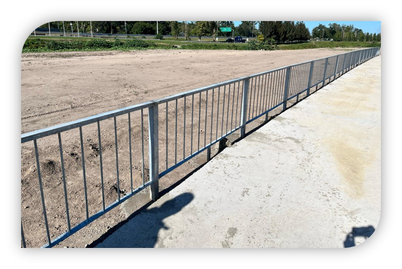
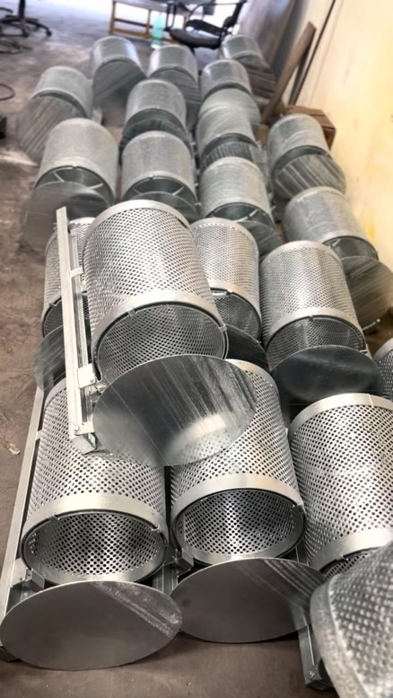
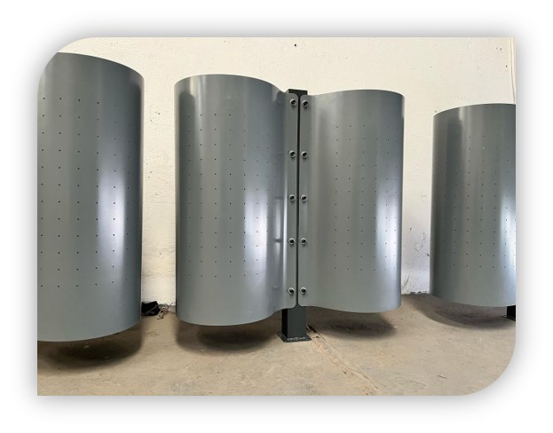
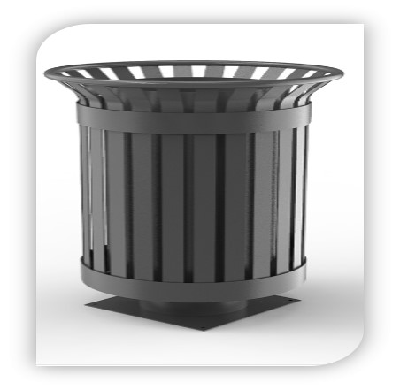
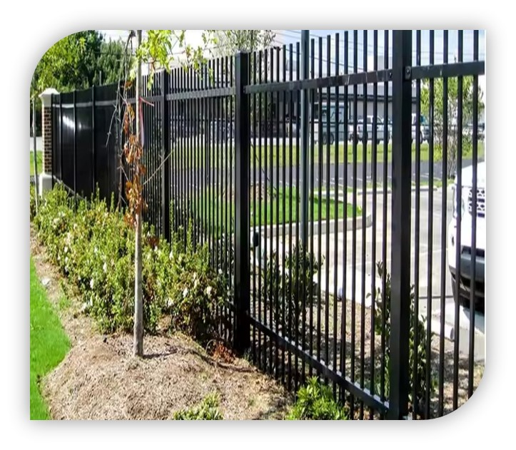
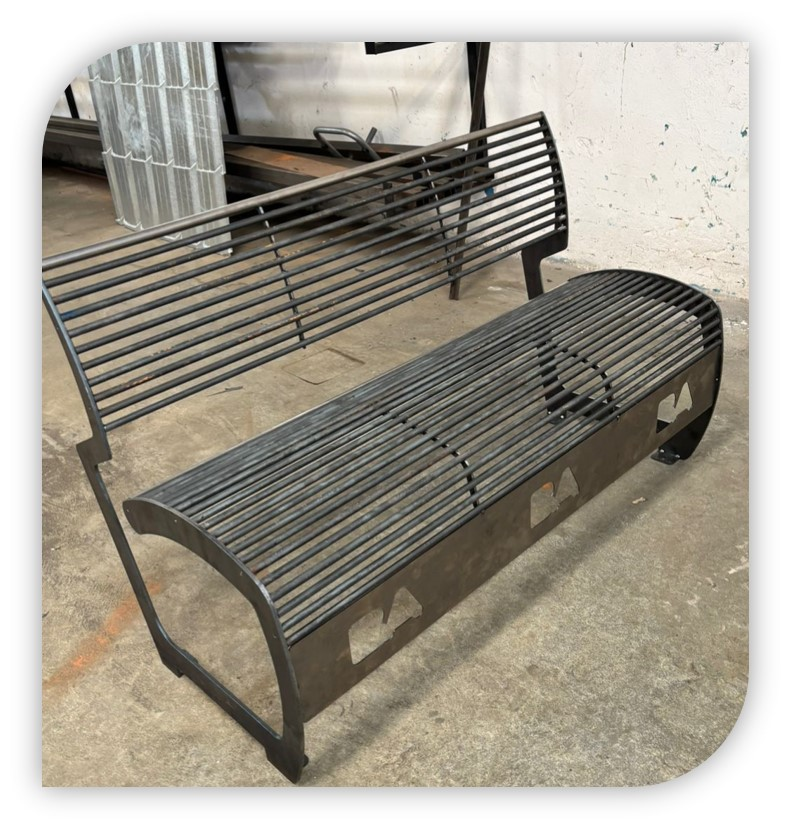

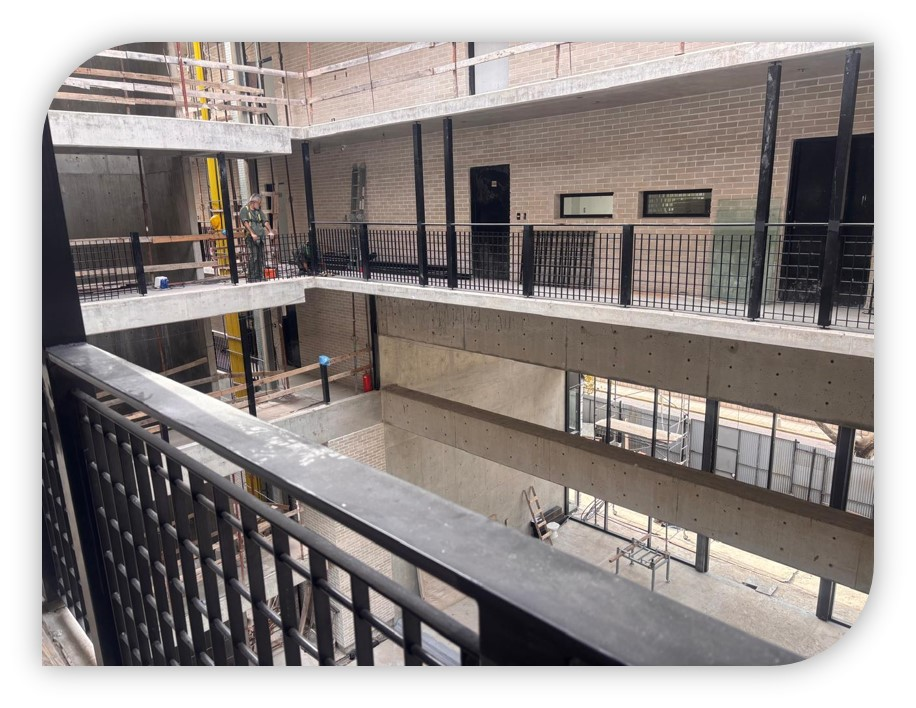
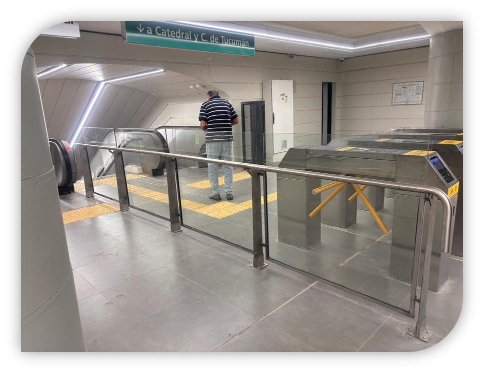
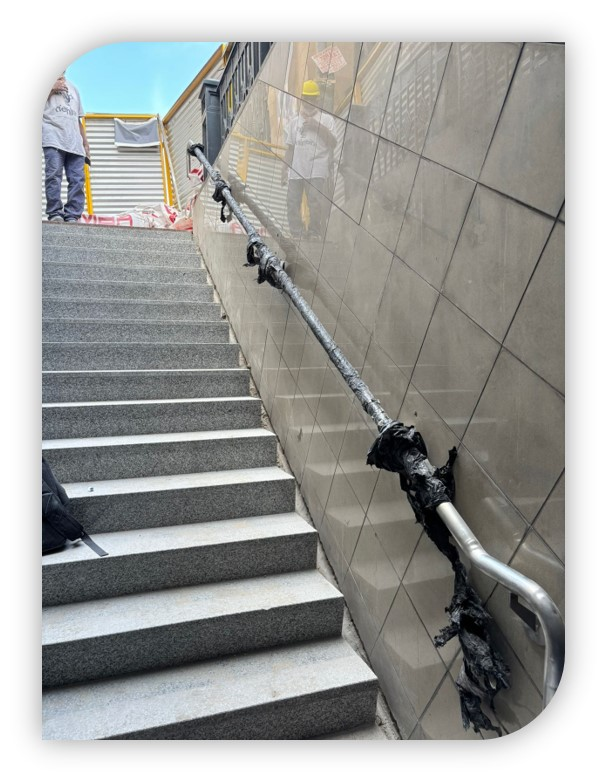
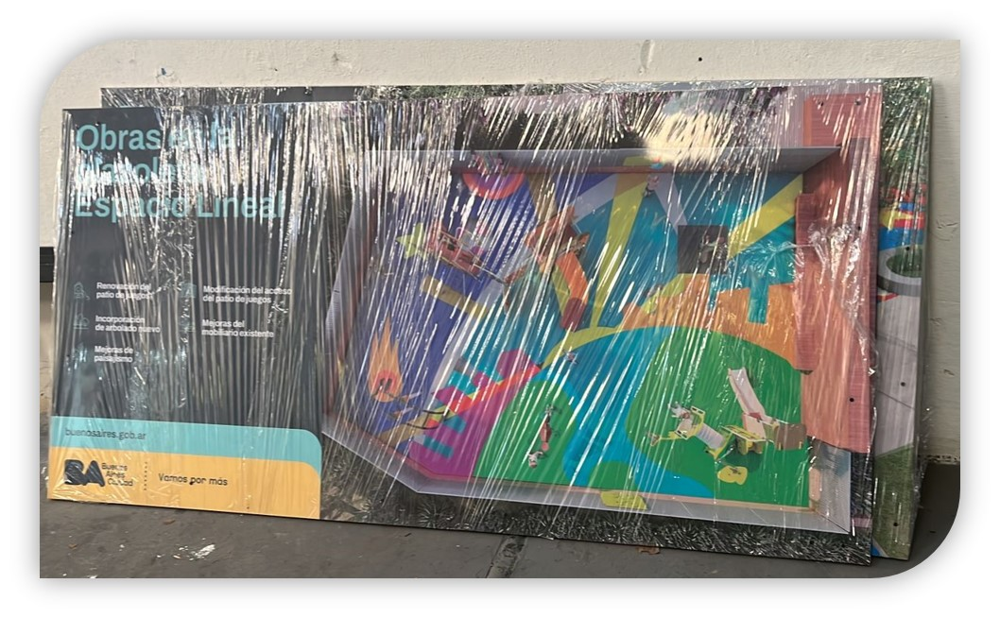
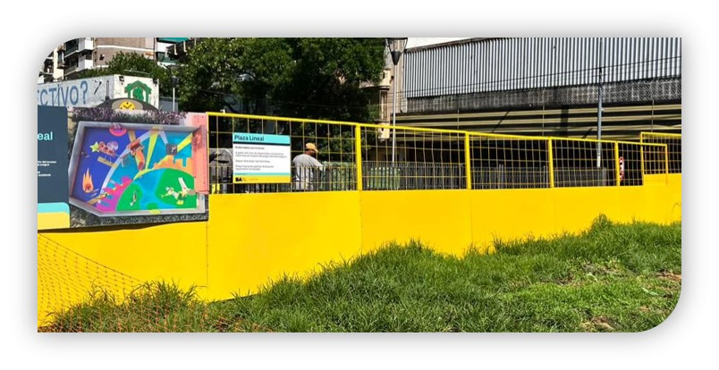
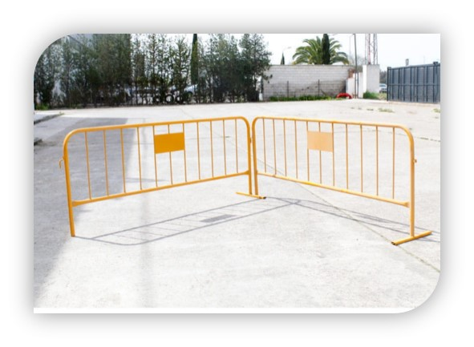